MH Sampling from a mixture of two 1d Gaussians
We use a 1d Gaussian proposal.
Contents
mixweight = [0.3, 0.7]; mu = [-50, 50]; K = 2; Sigma = cat(3, 100, 100); targetFn = @(X)mixGaussLogprob(mu, Sigma, mixweight, X);
Cool plot from Christoph Andrieu
sigmas = [10 100 500]; for i=1:length(sigmas) sigma_prop = sigmas(i); setSeed(0); proposalFn = @(x) (x + (sigma_prop * randn(1, 1))); N = 1000; xinit = mu(2) + randn(1, 1); [x, ar] = metropolisHastings(targetFn, proposalFn, xinit, N); figure; nb_iter = N; x_real = linspace(-100, 100, nb_iter); y_real = exp(mixGaussLogprob(mu, Sigma, mixweight, x_real(:))); Nbins = 100; plot3(1:nb_iter, x, zeros(nb_iter, 1), 'linewidth', 2.5) hold on plot3(ones(nb_iter, 1), x_real, y_real, 'linewidth', 2.5) [u, v] = hist(x, linspace(-100, 100, Nbins)); plot3(zeros(Nbins, 1), v, u/nb_iter*Nbins/200, 'r', 'linewidth', 2.5) hold off; grid on; view(60, 60) xlabel('Iterations') ylabel('Samples') title(sprintf('MH with N(0,%5.3f^2) proposal', sigma_prop)) printPmtkFigure(sprintf('demoMhGmmChristoph%d', sigma_prop)); end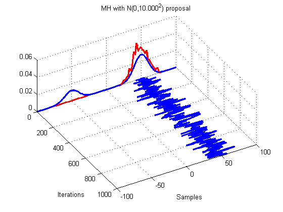 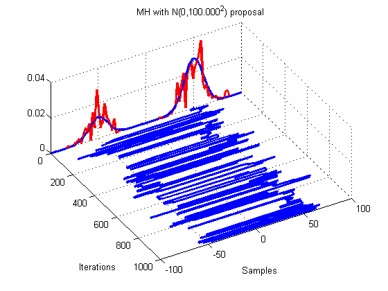 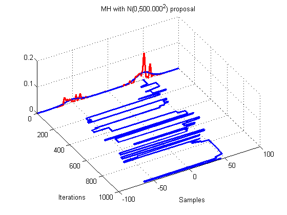
Convergence diagnosistics
seeds = 1:3; nseeds = length(seeds); N = 1000; X = zeros(N, nseeds); for s=1:length(sigmas) sigma_prop = sigmas(s); proposalFn = @(x) (x + (sigma_prop * randn(1,1))); for i=1:length(seeds) setSeed(seeds(i)); xinit = mu(2) + randn(1,1); [X(:,i), ar] = metropolisHastings(targetFn, proposalFn, xinit, N); end plotConvDiagnostics(X, sprintf('sigma prop %5.3f', sigmas(s))); end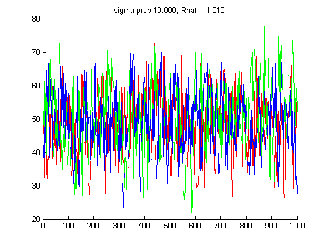 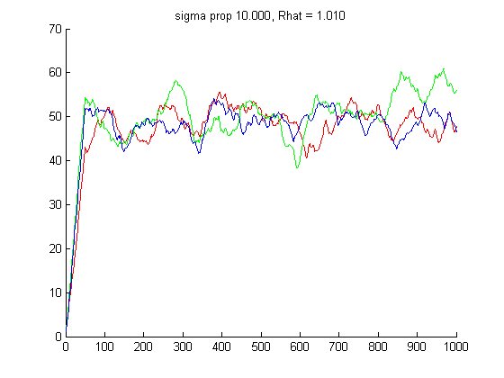 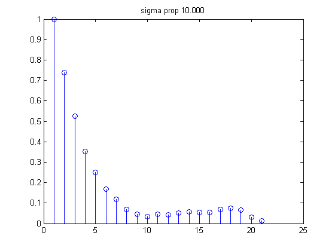 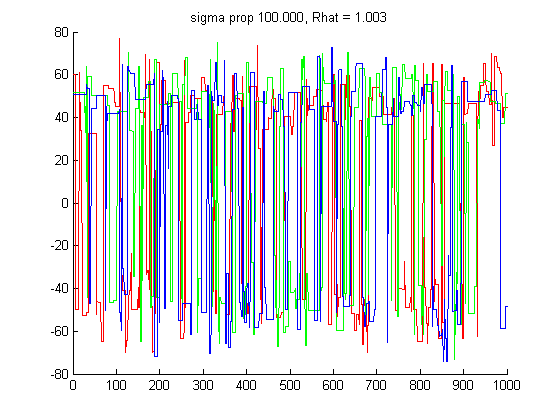 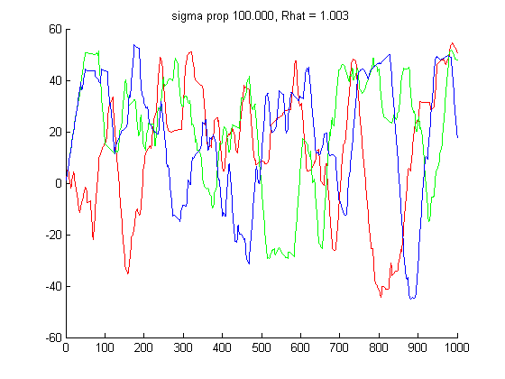 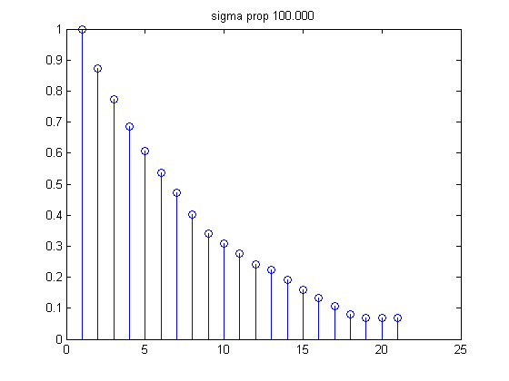 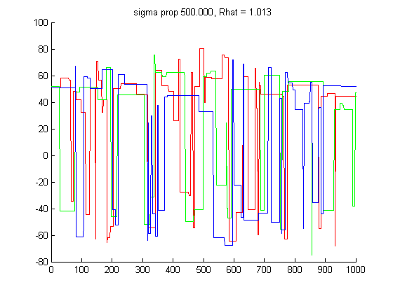 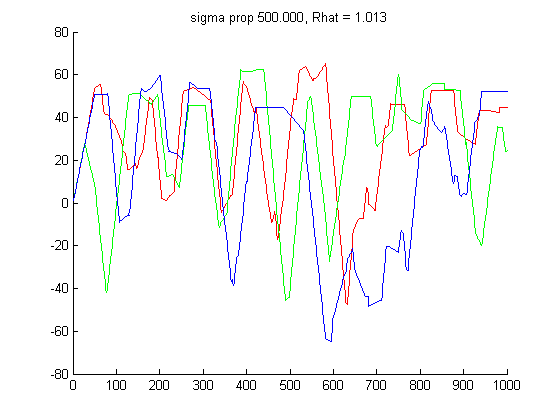 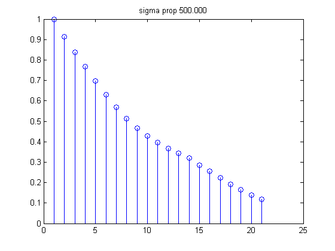